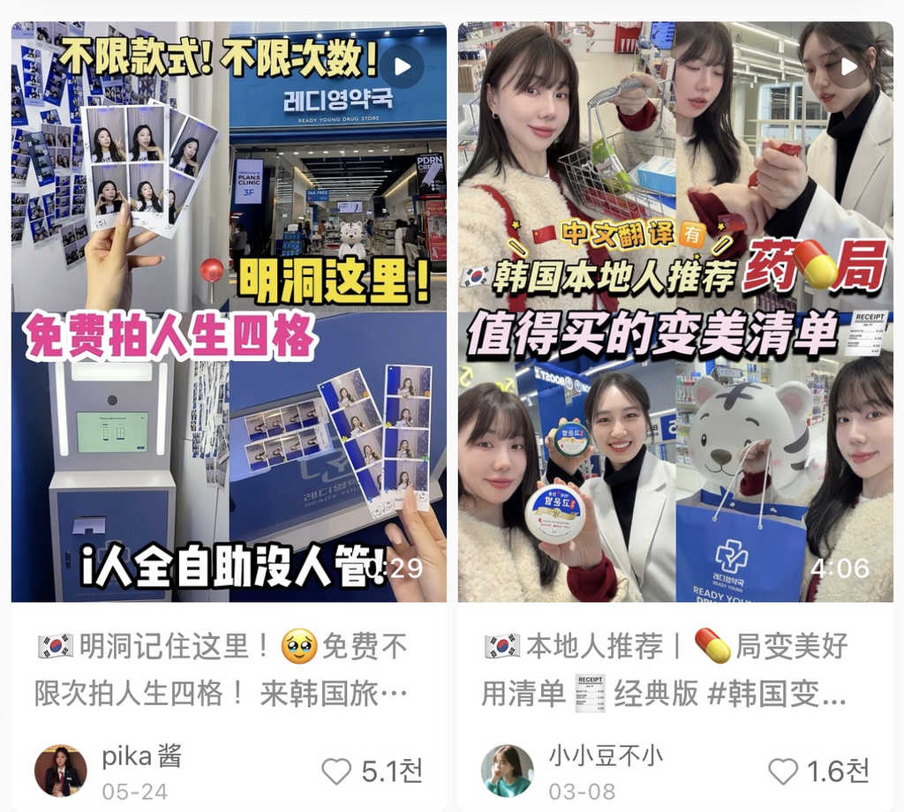
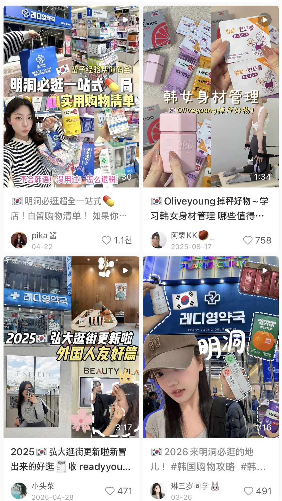
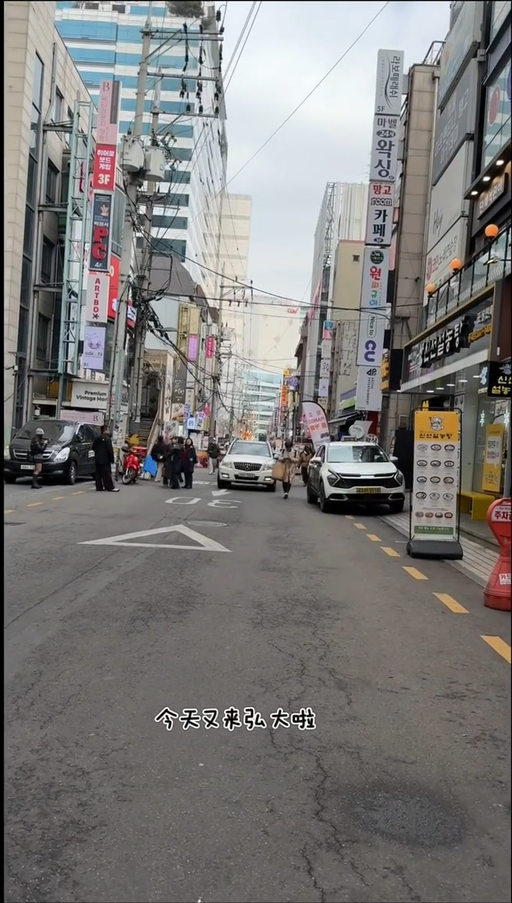
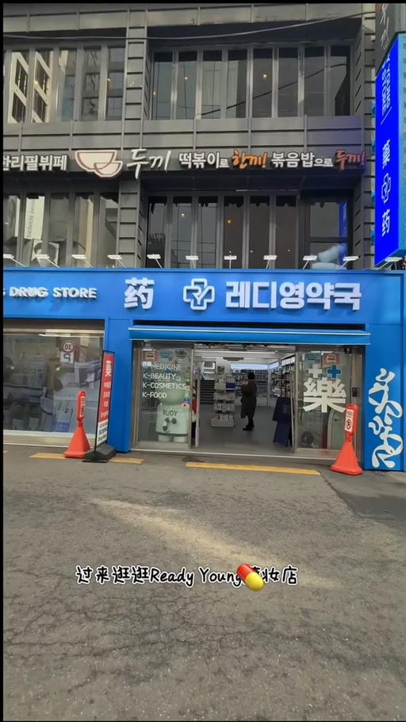
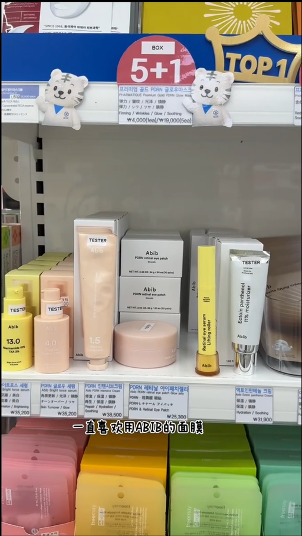
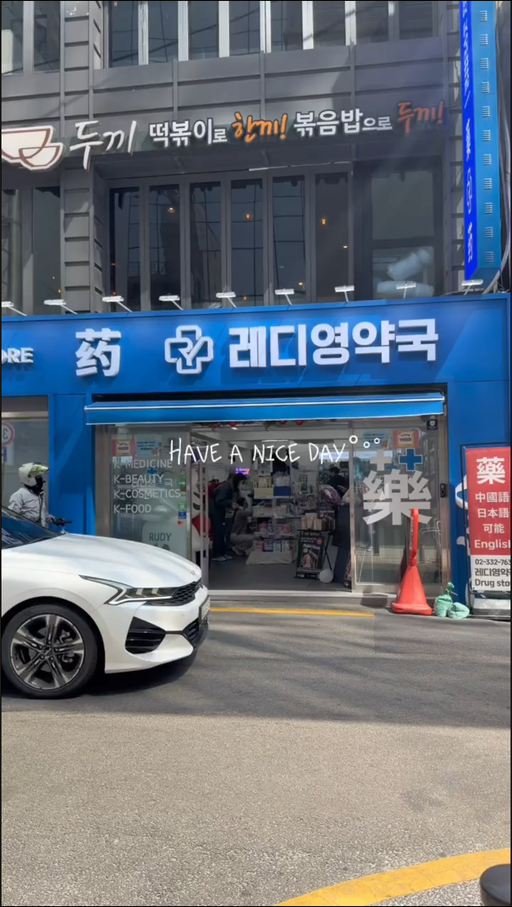
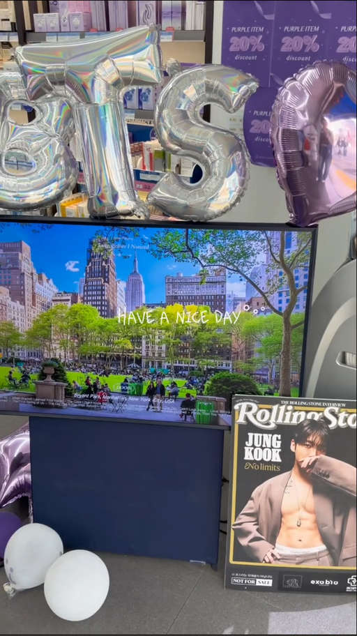
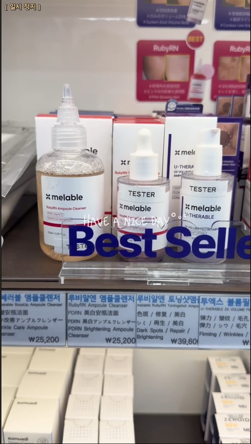

방한 인플루언서용
아래 필수 컷, 멘트 꼭 지켜서 진행해주세요.
* 본 가이드는 GLOWDERM 브랜드 공식 가이드입니다.
→ 아래 [영상] 표시 섹션 확인
→ 아래 [사진] 섹션 확인
* 트랙별로 다른 것: 분량·구조·커버·본문·해시태그·교환권 수량
* 공통: 약국 정보·방문 절차, 약사 등장 연출, 금지어·임상수치 규정, 업로드·검수·수정·삭제금지 규정
1~2 반드시 포함 (본인 얼굴 노출은 선택)
* 하단 참고 레퍼런스 내 이미지 참고
* 장면별 상세 대사가 필요하면 하단 참고자료의 예시 영상·구성을 참조하세요
사진 노트로 진행하시는 분만 이 섹션을 보시면 됩니다. 컨셉(방한 약국)은 영상과 동일합니다.
1) 사진 구성
1-1) 1·2·3번째 사진 배치 (실측 공통 패턴)
인기 노트 3건에서 3/3 공통으로 나타난 단 하나의 패턴입니다. 이 순서만 지켜도 초반 이탈이 줄어듭니다.
2) 본문 글 (图文은 글이 절반입니다)
이 장르(韩国药师推荐 = 한국 약사 추천)에서 약사 등장이 가장 강한 신뢰 훅입니다. 반응이 좋은 노트는 대부분 약사가 화면에 나옵니다. 가능한 한 꼭 담아주세요.
📍 명동 전용 — 약사 없이 훅 만들기
명동레디영약국은 약사님 촬영이 어렵습니다. 「药师推荐」(약사 추천) 훅 대신 아래 요소로 대체해주세요 — 영상·사진 공통.
제목은 「药师推荐」형 대신 쇼핑 가이드형(必买清单·宝藏·逛)으로 — 아래 「제목 작법」 섹션의 명동 전용 예시 참고.
실제로 잘 나온 노트들의 공통 패턴입니다. 제목은 20자 내외로 짧게.
바로 쓰실 수 있는 제목 예시 (그대로 사용 가능)
· 韩国药师推荐｜药局值得入手的5款护肤单品✨
한국 약사 추천｜약국에서 사볼 만한 스킨케어 5종
· 2026🇰🇷韩国药局清单｜药师推荐的TXA护肤单品
2026 한국 약국 리스트｜약사가 추천한 TXA 라인
· 跟着韩国药师逛药局 2026必买清单
한국 약사와 함께 약국 구경 2026 필수 구매 리스트
· 韩国药局购物清单｜药师推荐的4款提亮单品
한국 약국 쇼핑 리스트｜약사 추천 톤 케어 4종
* 매장명(明洞 / 圣水 / 江南)을 제목에 넣으면 검색 노출에 유리합니다.
📍 명동 전용 제목 예시 (약사 프레이밍 대신 쇼핑 가이드형)
· 逛遍明洞药局 宝藏好物大公开
명동 약국 구경 보물템 대공개
· 明洞药局必买清单｜价格+实拍全记录
명동 약국 필수 구매 리스트｜가격+실제 촬영 전체 기록
* 금지어(祛斑·美白 등)는 아래 「违禁词」 섹션 참고 — 명동 제목에도 동일 적용
크리에이터 본인 계정 성격에 맞는 방향 하나를 골라 촬영·본문을 구성하세요. 형식(영상/사진) 구분과 별개로 적용 가능하며, 위 「촬영안」·「제목 작법」의 톤·규정은 그대로 유지됩니다.
약국에서 주요 촬영, '한국 약국 필수템/추천템', '한국 여행 쇼핑 리스트' 같은 정보성(攻略型) 접근. 일부 매장은 약사 추천·설명을 넣어(위 「약사님 등장 장면」 참고) 전문성·신뢰도를 강화합니다. 다른 약국 인기 제품과 묶는 모음집으로 구성할 경우 동일 효능 경쟁 제품은 제외합니다.
추천 해시태그: #韩国旅游 #韩国购物 #韩国必买 #韩国药店必买 #韩国药局 #韩国药局好物 #韩国护肤品
약국 노출 비중을 낮추고 구매 후 실사용 후기 중심으로 구성. 효능·제형·사용법·실제 사용감 위주, 초반에 약국 구매 장면을 일부 넣는 것은 가능합니다. 본문에 구매 약국 정보를 자연스럽게 기재하세요.
추천 해시태그: #淡斑⚠ #传明酸 #韩国护肤品 #韩国护肤 #韩国护肤好物 #基础护肤 #TXA
⚠ 「淡斑」는 해시태그로만 사용 가능합니다. 본문·자막·커버 텍스트에는 쓰지 마세요 — 그쪽은 「祛斑」·「美白」과 동일하게 금지이며 「提亮肤色」·「改善暗沉」으로 씁니다. 이 해시태그는 사용하지 말고 빼거나, 꼭 필요하면 「提亮肤色」계열로 대체해주세요.
'숨은템·정보 차별성' 각도로 접근. 여러 제품을 모음집으로 구성해 단일 제품 광고 느낌을 줄이고 '小众'으로 클릭을 유도합니다.
추천 해시태그: #韩国护肤品 #韩国护肤 #韩国护肤好物 #韩国必买 #基础护肤 #传明酸
인지도 높은 올리브영을 활용한 반전 훅. '한국에서 올리브영만 가지 마세요', '한국 약국에서도 스킨케어를 살 수 있다고?' 식 훅으로 접근합니다.
추천 해시태그: #oliveyoung #韩国旅游 #韩国购物 #韩国必买 #韩国药局 #韩国药店必买 #韩国护肤品
금지 표현 → 대체 표현
※ 아래 「」 안의 표현은 설명을 위한 인용입니다. 노트 본문·자막·나레이션에 그대로 쓰지 마세요.
❌ 「祛斑」(기미 제거) → ✅ 「提亮肤色」 (피부톤 밝히기)
「淡斑」은 해시태그로만 사용 가능 — 본문·자막·커버 텍스트에서는 동일하게 금지
❌ 「美白」(미백) → ✅ 「改善暗沉」 (칙칙함 개선)
❌ 「治疗」·「根治」·「治愈」 (치료·완치) → 대체 없음 · 삭제
❌ 「速效」·「强效」·「特效」·「立即见效」·「7天见效」 등 즉효·시효성 표현 → 대체 없음 · 삭제
❌ 「消炎」·「杀菌」·「脱敏」·「祛疤」 → ✅ 「舒缓肌肤不适」 (피부 불편감 완화)
❌ 「医美级」·「医用级」·「医药级」·「院线同款」·「医用平替」 → 사용 불가
械字号(의료기기) 허가 제품만 쓸 수 있는 표현입니다. 본 제품은 일반 화장품이라 해당되지 않습니다.
❌ 「最」·「第一」·「唯一」·「100%」·「保证」·「彻底」 등 절대적 표현 → 사용 불가
"人气很高"(인기가 많다) / "问询特别多"(문의가 많다) 정도로 바꿔주세요.
🖼️ 이미지에도 똑같이 적용됩니다 (실측에서 발견된 위험 패턴)
안전한 표현 예시 (실제 한국 약사 계정 사용 문구)
추가로 꼭 지켜주실 것
공통 태그 (캡션에 아래 간체 태그 그대로 삽입 — 한국어 태그 사용 안 함):
* #传明酸(1.1억 뷰)이 #TXA(2.5만 뷰)보다 검색량이 훨씬 높아 우선 배치했습니다. #TXA는 후순위로 유지 (자리에서 뺀 것은 노출수 데이터가 없는 #外国人友好).
매장 태그 (실제 방문 매장으로 택1):
* 공통 태그 9개 + 매장 태그 1개 = 총 10개. 사진(图文) 노트의 권장 개수(9~10개)와 동일하니 위 태그를 그대로 본문 맨 끝에 붙여주시면 됩니다.
콘텐츠 제작
콘텐츠 발행
협업 조건
4컷 분할 썸네일 — 1) 약국 외관 2) 글로우덤(테두리/스티커 강조) 3) 타사 제품 (본인 얼굴 노출은 선택)


[pika酱·05-24·♥5.1천] 不限款式！不限次数！明洞这里！免费拍人生四格 I人全自助没人管！
(스타일·횟수 무제한 / 명동 / 인생네컷 무료 / 완전셀프)
[小小豆不小·03-08·♥1.6천] 中文翻译有 / 韩国本地人推荐 药局 / 值得买的变美清单
(중국어번역 있음 / 현지인 추천 약국 / 사볼만한 뷰티템)
[pika酱·04-22·♥1.1천] 留子经验帮你码全！明洞必逛一站式药局 实用购物清单 不会韩语！没用过！怎么退税！
(유학생경험 총정리 / 명동 원스톱 약국 / 실용 쇼핑리스트)
[琳三岁同学·03-26·♥491] 2026 来明洞必逛的地儿!
(2026 명동 필수코스)
패턴: 가는길 → 외관 → 내부 → 진열매대






명동/성수 약국 + 외국인 친화 + 쇼핑리스트/공략
访韩达人（博主）专用
请务必按照以下必拍镜头与必说台词进行拍摄。
* 本指南为 GLOWDERM 品牌官方指南。
→ 请看下方标注 【视频】 的章节
→ 请看下方 【图文】 章节
* 按形式区分：篇幅·结构·封面·正文·话题标签·兑换券数量
* 两种形式通用：药局信息·到店流程、药剂师出镜拍法、用语规范·测试数值规定、发布·审核·修改·不得删除等规定
1~2必须包含（是否露脸由达人自行决定 / 参考下方参考图）
* 需要详细分镜台词时，请参考文末参考资料中的示例视频与结构
选择图文形式的达人只看本章节即可。内容主题（访韩药局）与视频一致。
1) 图片构成
1-1) 第1·2·3张图片的排列（实测共通规律）
这是3篇高互动笔记中3/3 全部一致的唯一规律。仅按此顺序排列，就能减少开头的流失。
2) 正文（图文笔记里，文字占一半分量）
在「韩国药师推荐」这一内容类型中，药剂师出镜是最强的信任钩子。数据好的笔记基本都有药剂师入镜，请尽量拍到。
📍 明洞专属 — 无药剂师也能立住内容
明洞Ready Young药局无法安排药剂师出镜，请用以下方式代替「药师推荐」钩子 — 视频·图文通用。
标题请用购物清单型（必买清单／宝藏／逛）代替「药师推荐」型 — 见下方「标题写法」章节明洞专属示例。
以下是实际表现较好的笔记的共通规律。标题请控制在 20字左右。
可直接使用的标题示例
· 韩国药师推荐｜药局值得入手的5款护肤单品✨
· 2026🇰🇷韩国药局清单｜药师推荐的TXA护肤单品
· 跟着韩国药师逛药局 2026必买清单
· 韩国药局购物清单｜药师推荐的4款提亮单品
* 标题里带上门店所在地（明洞／圣水／江南）更有利于搜索曝光。
📍 明洞专属标题示例（用购物清单型代替药师框架）
· 逛遍明洞药局 宝藏好物大公开
· 明洞药局必买清单｜价格+实拍全记录
* 违禁词（祛斑·美白等）同样适用于明洞标题，请见下方「平台用语规范」章节
请根据达人本人账号风格，选择以下其中一种方向进行拍摄和撰写正文。与形式（视频/图文）区分无关，可任意搭配；上方「拍摄方案」「标题写法」的语气·规定仍需遵守。
主要在药局拍摄，采用"韩国药局必买/推荐好物"、"韩国旅游购物清单"式攻略型角度。部分门店可加入药剂师推荐·讲解（见上方「药剂师出镜画面」章节）以增强专业度·信任感。若做成汇总多家药局热门产品的合集，请排除功效相同的竞品。
推荐话题标签：#韩国旅游 #韩国购物 #韩国必买 #韩国药店必买 #韩国药局 #韩国药局好物 #韩国护肤品
降低药局出镜比重，以购买后的实际使用体验为主。侧重功效·质地·使用方法·真实使用感，开头可保留部分在药局购买的画面。请在正文中自然带出购买药局信息。
推荐话题标签：#淡斑⚠ #传明酸 #韩国护肤品 #韩国护肤 #韩国护肤好物 #基础护肤 #TXA
⚠ 「淡斑」仅可作为话题标签使用。正文·字幕·封面文案中请勿使用 — 该场景与「祛斑」「美白」同等禁用，请改用「提亮肤色」「改善暗沉」。
以"小众好物·信息差"角度切入。用多款产品组成合集，降低单一产品广告感，以"小众"吸引点击。
推荐话题标签：#韩国护肤品 #韩国护肤 #韩国护肤好物 #韩国必买 #基础护肤 #传明酸
借助知名度高的Olive Young制造反差钩子。用"来韩国别只逛Olive Young"、"原来韩国药局也能买护肤品？"式钩子切入。
推荐话题标签：#oliveyoung #韩国旅游 #韩国购物 #韩国必买 #韩国药局 #韩国药店必买 #韩国护肤品
不可用表述 → 合规替代表述
※ 下方「」内的词仅为说明用途的引用示例，请勿写入笔记正文·字幕·口播。
❌ 「祛斑」 → ✅ 「提亮肤色」
「淡斑」仅可用于话题标签 — 正文·字幕·封面中同等禁用
❌ 「美白」 → ✅ 「改善暗沉」
❌ 「治疗」·「根治」·「治愈」 → 无替代 · 请删除
❌ 「速效」·「强效」·「特效」·「立即见效」·「7天见效」等时效性表述 → 无替代 · 请删除
❌ 「消炎」·「杀菌」·「脱敏」·「祛疤」 → ✅ 「舒缓肌肤不适」
❌ 「医美级」·「医用级」·「医药级」·「院线同款」·「医用平替」 → 不可使用
此类表述仅限械字号产品，本产品为普通化妆品，不适用。
❌ 「最」·「第一」·「唯一」·「100%」·「保证」·「彻底」等绝对化用语 → 不可使用
请改为"人气很高""问询特别多"这类表述。
🖼️ 图片同样适用（实测发现的风险案例）
安全表述示例（韩国药师账号的实际用语）
另外请务必遵守
通用话题（请直接使用以下中文话题，不使用韩文话题）：
* #传明酸（1.1亿浏览）搜索量远高于 #TXA（2.5万浏览），故优先排列。#TXA保留但排在后面（腾出的位置来自浏览数据缺失的#外国人友好）。
门店话题（按实际到访门店选择其一）：
* 通用话题9个 + 门店话题1个 = 共10个，与图文笔记建议的9~10个一致，直接放在正文末尾即可。
内容创作
内容发布
合作条款
四格分割封面 — 1)药局外观 2)GLOWDERM（加边框/贴纸强调） 3)其他产品（是否露脸由达人自行决定）
[pika酱·05-24·♥5.1千] 不限款式！不限次数！明洞这里！免费拍人生四格 I人全自助没人管！
[小小豆不小·03-08·♥1.6千] 中文翻译有 / 韩国本地人推荐 药局 / 值得买的变美清单 — 注：原文"变美"为参考账号原创表达，非本品牌推荐用语
[pika酱·04-22·♥1.1千] 留子经验帮你码全！明洞必逛一站式药局 实用购物清单 不会韩语！没用过！怎么退税！
[琳三岁同学·03-26·♥491] 2026 来明洞必逛的地儿!
镜头模式：前往途中 → 外观 → 内部 → 展示台
明洞/圣水药局 + 外国人友好 + 购物清单/攻略